Welcome to Tikal's Flutter Workshop
Flutter is a great framework for creating beautiful apps both for Android and IOS, and in the future, for more platforms.
Flutter apps are based on a single codebase developed in Google's Dart programming language.
Flutter Key Features:
- Cross Platform: Developing for IOS, Android and more in the future
- Single Codebase: Develop a beautiful cross platform apps based on single codebase
- Open source: Flutter is an open source SDK
- Fast Development Cycle: Fast development cycle with HotReload
- No UI bridges: Flutter doesn't use platform OEM widgets such as TextView or RecyclerView, instead, Flutter draws all widgets directly on device canvas.
No bridges are used. Flutter owns every pixel on screen! - Performance - Flutter UI and animation are great
- Dart - Dart is an object oriented language which utilise modern programming paradigms such as asynchronous
Future<>, await,StreamsandListeners
- Use JIT compiler for debug and AOT for production - Google Support - Flutter developed and supported by Google
- Great Documentation - Flutter has reach and detailed documentation
What you will build:
In this workshop - codelab, you will create your first Flutter app, learn the basic concepts of Flutter such as Widget, Context and State
Your app will:
- Contain two pages - a Login page with a login button and a Gallery page
- Download and show images from the internet
- Use the Flutter
Navigatorto move between pages
Final App
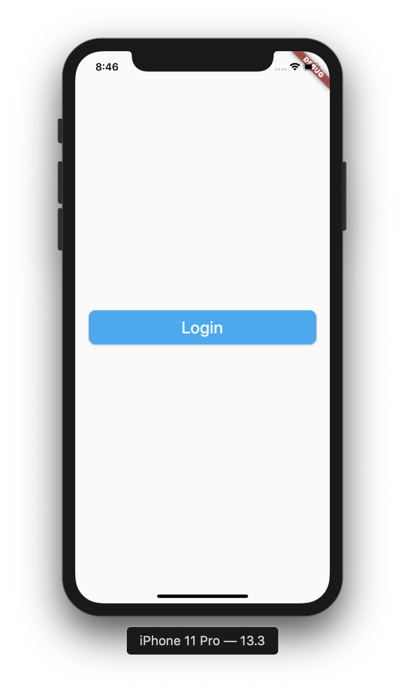 | 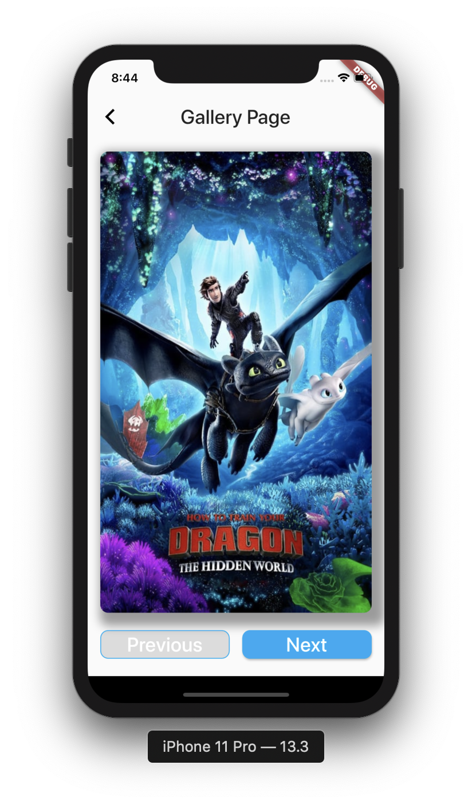 |
What you will learn:
- Flutter building blocks -
StatelessandStatefulwidgets - Get familiar with
ContextandState - Design and build UI
- Create custom widgets and use them
- Use Flutter hot reload
- Handle click events and use Navigator to move between pages
- Learn the Dart programming language
- Flutter IDE tips and tricks
What you will do here:
- Create new Flutter project
- Create and run Android emulator
- Run Flutter app from IDE
- Run flutter app from command line
- Explore Flutter project structure
- Experience hot reload
Create New Flutter Project
- Open Android Studio
- In the welcome screen select: Create new Flutter Project
- In the next screen select Flutter Application
- Set project name and location
- Accept all the defaults selections and complete the project initialization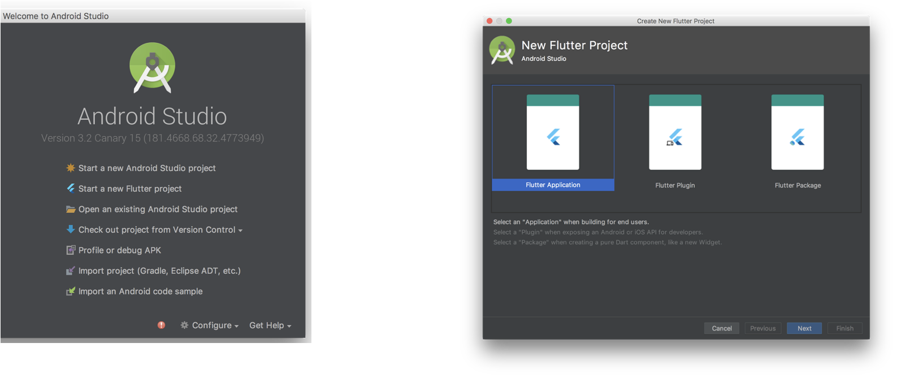
Explore Flutter Project Structure
Create an Android Emulator
- Click on the AVD manager icon:
- Click on
+Create Virtual Devicebutton
- Select the default emulator and click
Next - Select a System Image, download it if required (Recommended for this tutorial, 27 - Oreo)
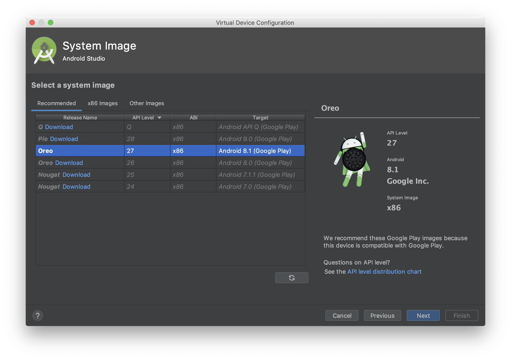
- Continue to configuration, set the emulator name,
- Click Finish. 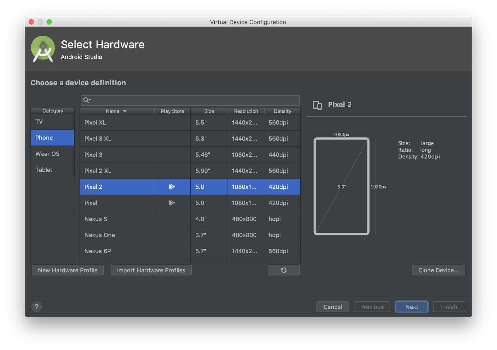
- Click the run button to start the emulator 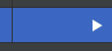
- Once the emulator is running, run flutter doctor command, notice device connected.

Run the default app
- Run the app from the Run icon 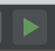
- This is the Flutter default demonstration app
- Check out the counter button operation
- In the project file, under the
MaterialAppmodify the theme color from blue to green - Press Ctrl+S to save, this will do Hot Reload, notice the color change on the screen.
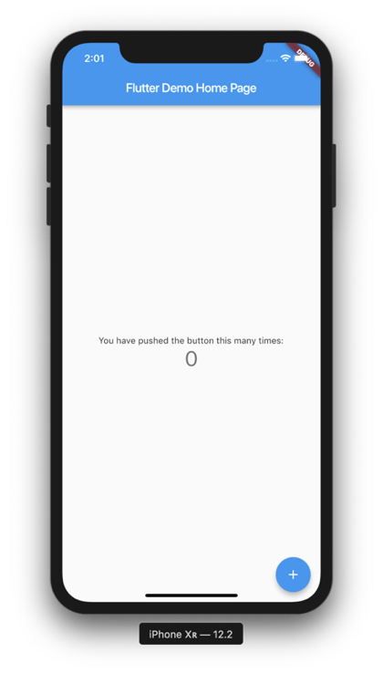 | 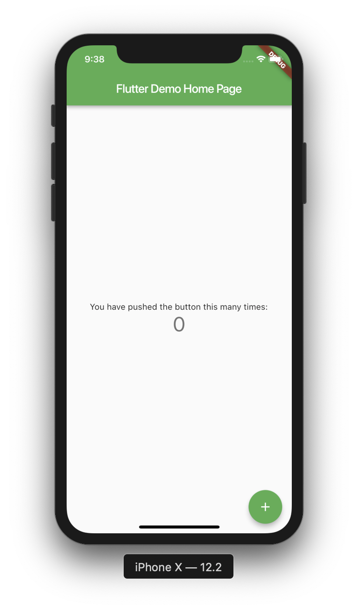 |
Run the App from the command line
- Stop the app from the Stop button
- Open IDE terminal
- Run
flutter run -d allcommand - Wait for the app to run
- Change the
_counter++to decrement_counter--(on line 59) - In the terminal, press
rto do hot reload, press the + button, the counter should now decrease.
What you will do here:
- Create the tutorial project root Application
- Learn about the MaterialApp Widget
- Create the
main()function which is the entry point of the app - Run Flutter app from the command line
Create the Application file
- Delete all code in
main.dartwhich given by the flutter sample project - Under the
libfolder, create newapplication.dartfile - Open the application file, import the
package:flutter/material.dartpackage - Create
MyAppclass which extendsStatelessWidget - Override the
build()method and return aMaterialAppWidget - In the MaterialApp constructor, add
title: "Flutter Workshop" - For now, set the
home:argument to beContainer()
//application.dart
import 'package:flutter/material.dart';
class MyApp extends StatelessWidget{
@override
Widget build(BuildContext context) {
return MaterialApp(
title: "Flutter workshop",
home: Container(),
);
}
}
- In the empty
main.dartfile, addvoid main()function and call therunAppfunction with MyApp() as a parameter: - Import the material package as necessary
//main.dart
import 'package:flutter/material.dart';
import 'package:flutter_workshop/application.dart';
void main() => runApp(MyApp());
- Open Android Studio terminal, run the app by typing:
flutter run -d all
What you will do here
- Create the app HomePage dart file
- Learn about Flutter page structure, AppBar, Scaffold and Body
- Use Flutter Hot Reload
- Learn about the Stateless Widget
Create The HomePage
- Under the
libfolder, create a newpagespackage - Inside the new
pagespackage, createhome_pagepackage - Inside the
home_pagepackage, create a newhome_page.dartfile - Open the
home_page.dartfile, create theHomePageclass, extendsStatelessWidget, override thebuild()method and return aContainer()
(Import the material package as necessary)
//home_page.dart
import 'package:flutter/material.dart';
class HomePage extends StatelessWidget {
@override
Widget build(BuildContext context) {
return Container();
}
}- Go back to the
application.dartreplace the Container() with the new HomePage()
Make import as necessary
//application.dart
return MaterialApp(
title: "Flutter workshop",
home: HomePage(),
)- Do Hot Reload - In the terminal type
r, app still has black screen.
Home Page Body
- In the build method of the
HomePageclass, replace the Container() widget with aScaffold()widget
The Scaffold widget represents a Material Design page structure that can contain various components such as:
- App Bar
- Floating Action Button
- Bottom Navigation Bar
- Body
- Inside the Scaffold constructor, under the title: argument, add the
body:argument and set it to aCenter()Widget - Set the Center child: widget to Text("Hello Flutter")
//main_page.dart
...
return Scaffold(
body: Center(
child: Text("Hello Flutter"),
),
);
}- Do hot reload, you should now see the homepage now:
What you will do here
| 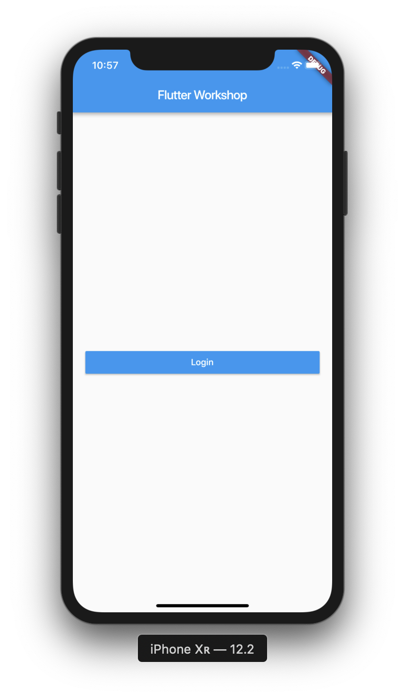 |
- In the
home_page.dartfile, click theText()child widget inside theCenterwidget, press Alt+Enter - Select
‘Wrap with new widget'
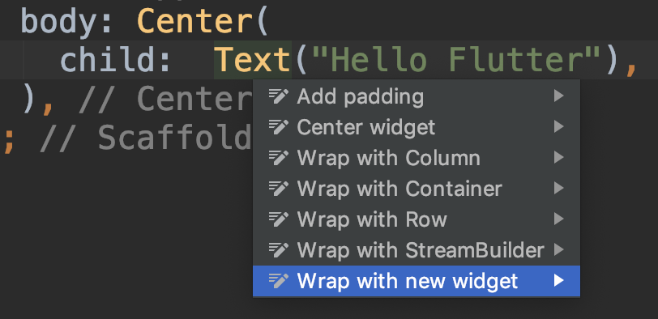
- Rename the new widget to
RaisedButton(),
In the RaisedButton constructor, set the child: widget toText("Login") - Add a comma after the button
Text(),press Alt+Enter to reformat the code
Notice the difference with and without the,
//home_page.dart
//...
body: Center(
child: RaisedButton(
child: Text("Login"),
),
)- Do hot reload, notice that the button is wrapped and disabled yet, that's because we didn't set an
onPressedcallback. We will do it in the next following steps.

Add Padding and Enabling
- Click on the RaisedButton, wrap it with
Containeras done above - Set the container width:
double.infinity, - Set the height to 50
- Do hot reload, the button is now centered again and stretched to all screen width
- A Container widget can also set padding to its child.
- In the Container, add padding, set the padding to
padding: const EdgeInsets.symmetric(horizontal: 20.0) - Do hot reload, the button should now have some horizontal padding
- Let's enable the button by adding
onPressedcallback - In the button constructor, under the
child: Text(), addonPressed:(){}, - Add log statement
print("Button clicked");
//home_page.dart
//...
child: RaisedButton(
child: Text("Login"),
onPressed: (){
print("Button Clicked");
},
), //RaisedButton- Do hot reload, the button should be enabled, click the button and watch the log messages in the console.
Styling the button and text
- In the RaisedButton constructor add a color: argument -
color: Theme.of(context).primaryColor - Set the button text color:
textColor: Theme.of(context).primaryTextTheme.button.color - Do hot reload, see the button and text color.
- Don't forget commas, press Alt+Cmd+L to reformat the code if required.
//home_page.dart
//...
Container(
height: 50,
width: double.infinity,
padding: const EdgeInsets.symmetric(horizontal: 20.0),
child: RaisedButton(
color: Theme.of(context).primaryColor,
textColor: Theme.of(context).primaryTextTheme.button.color,
child: Text("Hello Flutter"),
onPressed: (){
print("Button clicked");
},
),
)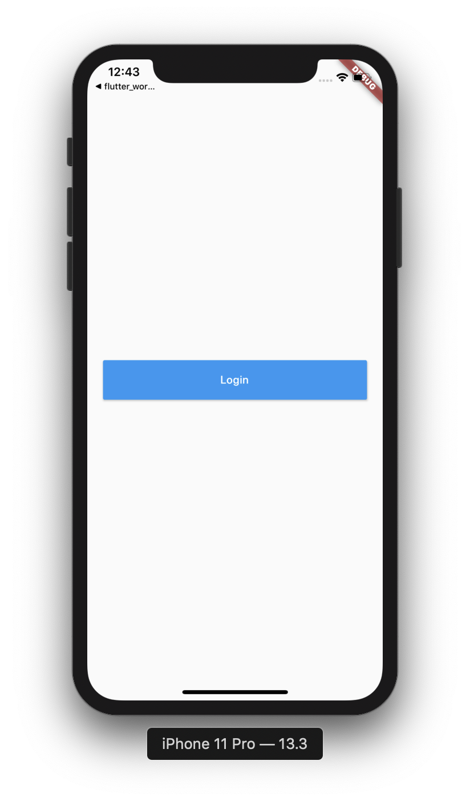
What you will do here
- Create a new page
- Learn about the StatefulWidget and State
- Rearrange sub widgets in a page
- Download images from the network
- Use the Flutter Navigator Widget to move between pages
Add new package and page Dart file
- Under the
pagespackage, create new page package -gallery_page
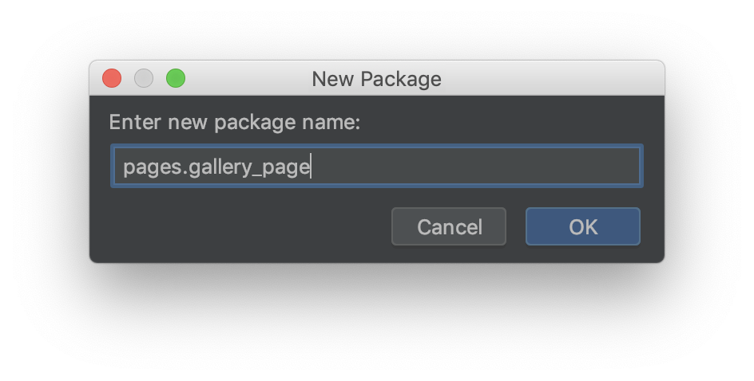
- In the new package create new dart file:
gallery_page.dart - In the new file, create
ImagesPageclass, extendsStatefulWidget - In the new class, override the
createState()method - In the ImagesPage, under the
ImagesPage class, create another class_GalleryPageStateclass that extendsState<ImagesPage> - In the State class, override the
build()method
- In the
createState()method, return a new_GalleryPageState()
//gallery_page.dart
class GalleryPage extends StatefulWidget {
@override
State<StatefulWidget> createState() => _ImagesPagesState();
}
class _GalleryPageState extends State<GalleryPage>{
@override
Widget build(BuildContext context) {
return null;
}
}ImagesPage body
- In the State
build()method, returnScaffold()widget. - Set an
appBar: AppBar()withtitle: Text("Gallery Page") - Set appBar
elevation: 0 - Set the page body: top widget to be
Container()with padding of 8.0 points, this widget will wrap the whole page body and allows you to add padding, and other decorations such as background color and border.
//gallery_page.dart
//...
body: Container(
padding: const EdgeInsets.all(8.0),
)- Next, set the Container child: widget to Column()
- Set the Column attributes to:
mainAxisAlignment: MainAxisAlignment.center,
mainAxisSize: MainAxisSize.max,
crossAxisAlignment: CrossAxisAlignment.stretch, - Add an children: <Widget>[] array, this array will contain the column child widgets vertically.
- The Scaffold() should now looks like this:
//gallery_page.dart
//...
Scaffold(
appBar: AppBar(
title: Text("Images page"),
elevation: 0,
),
body: Container(
padding: const EdgeInsets.all(8.0),
child: Column(
mainAxisSize: MainAxisSize.max,
mainAxisAlignment: MainAxisAlignment.start,
crossAxisAlignment: CrossAxisAlignment.stretch,
children: <Widget>[
],
),
),
);Open the GalleryPage
- In the
home_page.dartfile, select the Login RaisedButton - In the onPressed: (){} callback, use the Flutter Navigator to open the new
GalleryPage():Navigator.of(context).push(MaterialPageRoute(builder: (context){ return GalleryPage();}));
//home_page.dart
//...
onPressed: () {
print("Button Pressed");
Navigator.of(context).push(
MaterialPageRoute(
builder: (context) {
return GalleryPage();
},
),
);
}- Import the
ImagesPage()class, use Alt+Enter and do import - Do hot reload
ror Hot Restartshift+r - Click the login button to open the ImagesPage
- You should now see an empty screen:
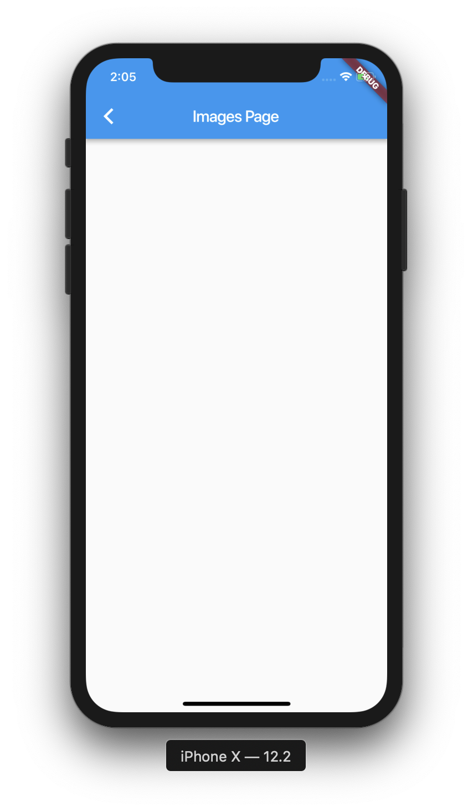
As you can see, the app has a default theme with default colors. Let's set a custom theme with some better colors for the entire app.
What you do here
- Set the app theme and colors
- Set base colors for buttons
App Theme
- Open the
application.dartfile - In the MaterialApp constructor, add
themeproperty - Set its value to
theme : ThemeData(
primaryColor: Colors.white,
buttonColor: Colors.lightBlue,
) - Do hot reload
Fix Button color
- Open the
home_page.dartfile - Set the RaisedButton color to:
color: Theme.of(context).buttonColor
textColor: Theme.of(context).accentTextTheme.button.color
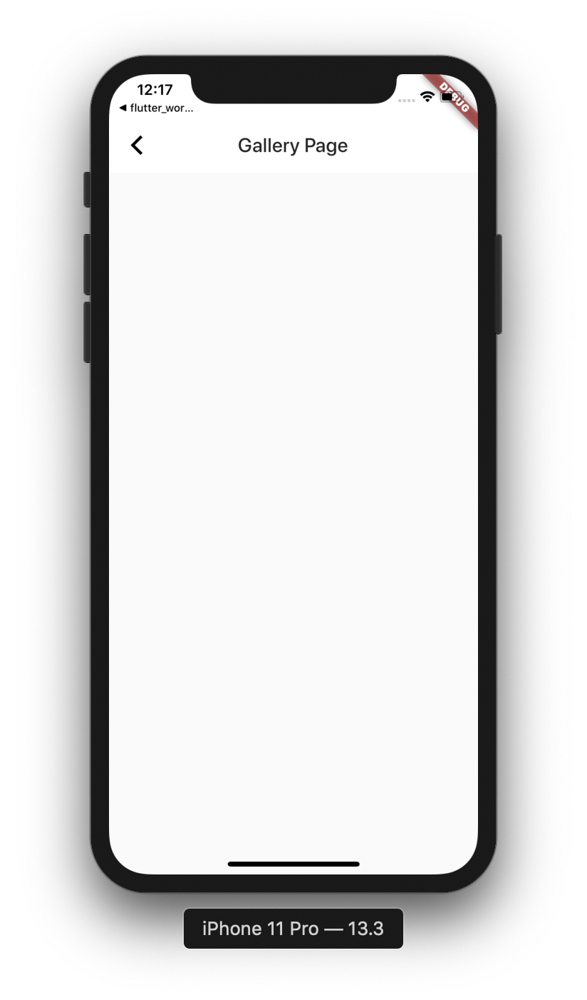 |
- Later on, we will improve the look of the buttons in the app.
What you do here
- Build the gallery pagesUI structure
- Use the Image widget to fetch images from the internet.
- Use Row widget to place widget horizontally
- Learn to use IDE shortcuts and Outline menu to wrap and remove widgets
- Use the Padding and Expanded widgets to adjust our layout
Image Widget
- Open the
gallery_page.dartfile - At the top of the
_GalleryPageStateclass, declare aStringmember variable:
final String _imageUrl = "https://image.tmdb.org/t/p/w500/xvx4Yhf0DVH8G4LzNISpMfFBDy2.jpg";
- Under the Column children widgets array, add the
Image.network()widget - Set the URL to _imageUrl variable
- Do hot reload or hot restart
- Your page should look like this now:
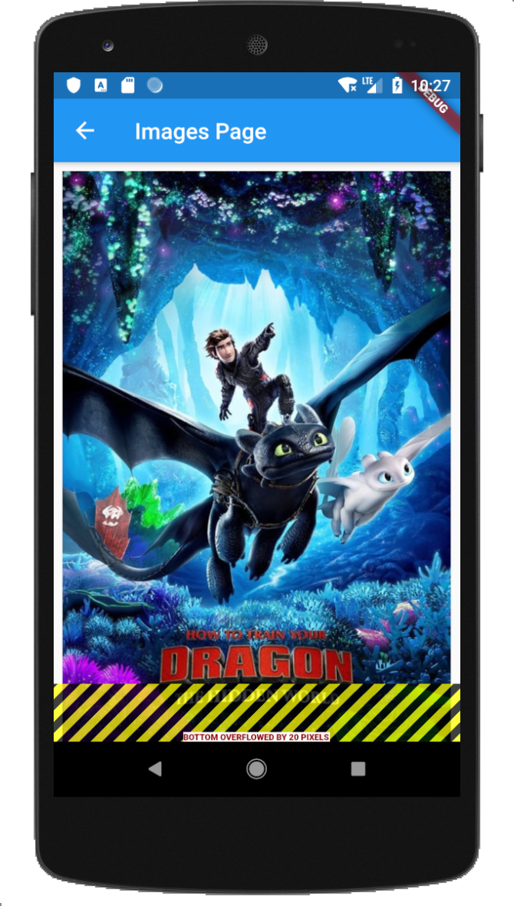 - It might show a yellow and black error, this might happen in small screens as the image overlapping the screen size. We will fix it in the next step.
Fix Image Overlap
- Select the Container of the Image widget.
- Click Alt+Enter
- Select Wrap with new widget
- Set the name of the widget to Expanded
- Set the image fit to
fit: BoxFit.fill
Expanded(
child: Container(
padding: const EdgeInsets.all(8),
child: Image.network(_imageUrl, fit: BoxFit.fill,),
),
)
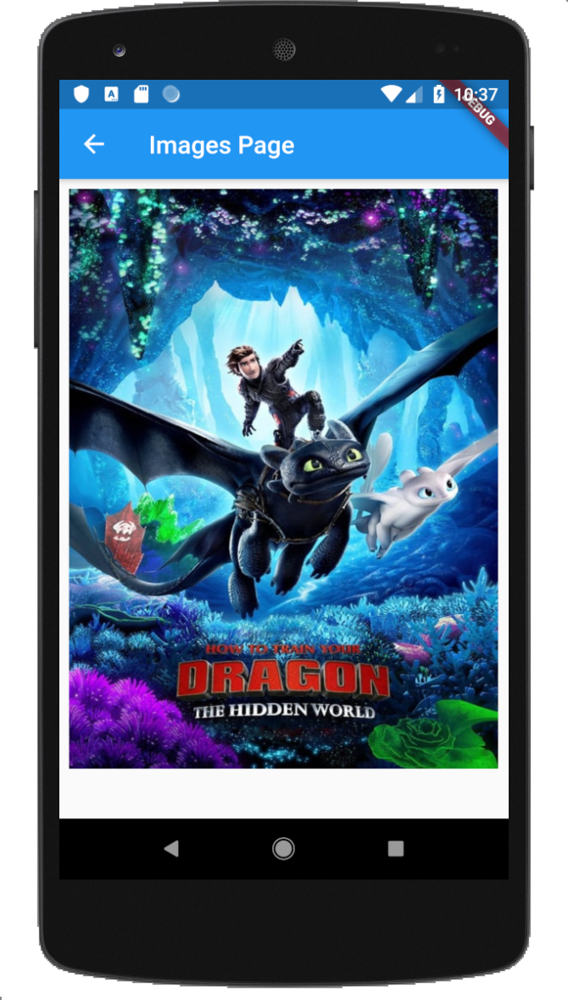
Use SafeArea Widget
On some devices, the layout may extend to the safe area, like this:
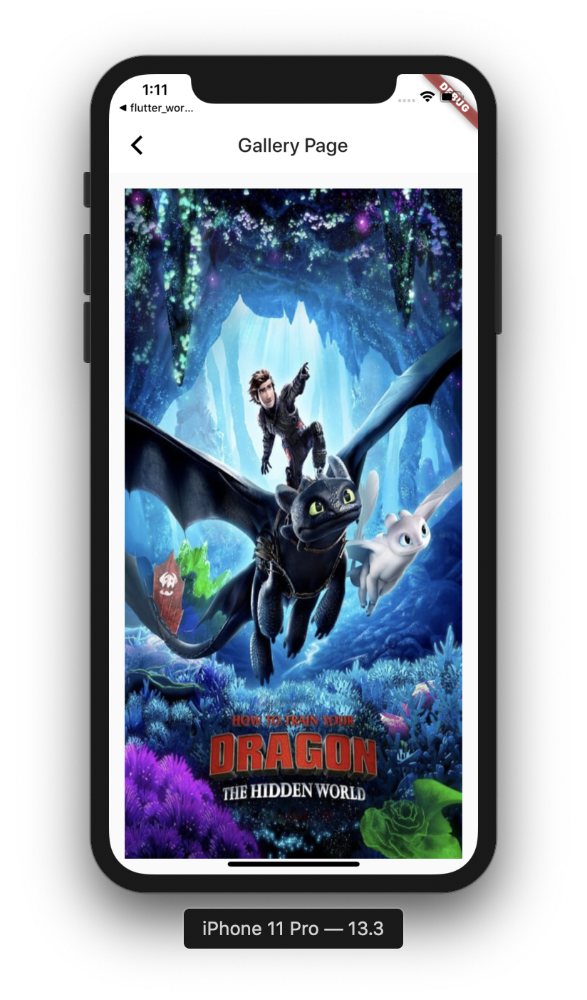
We can use the SafeArea widget to prevent layout to overlap the safe area zone.
- Select the Saffold Widget, and press Alt+Enter or Options+Enter
- Select wrap with a widget option
- Set the new widget to SafeArea widget
- Set the safe area properties:
top: false
bottom: true
Add Two Buttons
- Under the
Expandedwidget add aRow()widget. - Set the Row attributes and add an empty children<Widget>[] array:
//galerry_page.dart
...
Expanded(
child: Container(
padding: EdgeInsets.all(8),
child: Image.network(_imageUrl, fit: BoxFit.fill,),
), //Image.nework
), //Expanded
Row(
mainAxisAlignment: MainAxisAlignment.spaceEvenly,
mainAxisSize: MainAxisSize.max,
crossAxisAlignment: CrossAxisAlignment.center,
children: <Widget>[
]
), //Row Always add a comma after the last widget- In the empty <Widget>[] array add two RaisedButton widgets
- Set the first button child: to
Text("Previous") - Set the text style to:
Text("Previous", style: TextStyle(fontSize: 25)) - Set the second button child: to Text("Next")
//galerry_page.dart
...
children: <Widget>[
RaisedButton(
child: Text("Previous", style: TextStyle(fontSize: 25)),
),
RaisedButton(
child: Text("Next"), style: TextStyle(fontSize: 25)
),
]
), //Row Always add a comma after the last widget- Do hot reload, watch the page with an image and two disabled buttons under it.
- The buttons are wrapped, let's make them stretched equally
- Select the first RaisedButton, press Alt+Enter select,
Wrap with widget - Set the widget name to
Expanded - Repeat steps 8-9 for the second button
- Do hot reload, the buttons should now be stretched horizontal equally
Add Buttons Padding
- Select the first RaisedButton, click on the Flutter Outline tab at the right side of the screen:
- Press the
Add paddingbutton - Set the padding:
padding:constEdgeInsets.symmetric(horizontal: 8.0) - Repeat steps 2-3 for Second button
- Do hot reload, buttons should now have some padding,
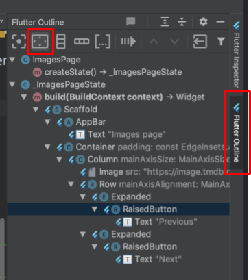
//galerry_page.dart
...
Expanded(
child: Padding(
padding: const EdgeInsets.symeetric(horizontal: 8.0),
child: RaisedButton(
child: Text("Previous"),
),
),
)Enabling the buttons
- The buttons still disabled, this because we haven't set an onPressed callback
- Inside the first buttons constructor, add onPressed: argument:
onPressed: (){}
- Repeat the last step for the second button
- Do hot reload, the buttons should be enabled and clickable
- Lets style the buttons
- In the first button constructor, right above the child: argument, set button color:
color: Theme.of(context).primaryColor - Next, under the color: argument, set the textColor:
textColor: Theme.of(context).primaryTextTheme.button.color
//gallery_page.dart
...
RaisedButton(
color: Theme.of(context).primaryColor
textColor: Theme.of(context).primaryTextTheme.button.color
child: .... ,
onPressed: (){}
)Extract buttons build to a method
- Lets extract button creating to a method
- Select the Padding of the first button (Use Option+UpArrow for easy selection)
- Press Command+Alt+M, ExtractMethod dialog open, set the method name to _buildButton
- Set the method return type to Widget
- Set the method to accept
BuildContext,StringandFunction() callback
Widget _buildButton( {BuildContext context, String title, VoidCallback onPressed})
- Replace the RaisedButton parameters inside the method with the method arguments:
Widget _buildButton(
{BuildContext context, String title, VoidCallback onPressed}) {
return Padding(
padding: const EdgeInsets.symmetric(horizontal: 4),
child: RaisedButton(
color: Theme.of(context).primaryColor, //Set the context
textColor: Theme.of(context).primaryTextTheme.button.color,
child: Text(title) //Set the title,
onPressed: onPressed, //Set the callback
),
);- Replace the RaisedButton child in the Buttons Row by calling the _buildButton method for each button.
- At the end, the buttons Row should look like this:
children: <Widget>[
Expanded(
child: _buildButton(
context: context,
title: "Previous",
onPressed: () {},
),
),
Expanded(
child: _buildButton(
context: context,
title: "Next",
onPressed: () {},
),
),What you do here
- Add Images list
- Switch between images using the navigation buttons
- Understand the idea of State and the use setState method
- Learn IDE shortcuts for selecting and extracting code
Add Images List
- In the State class, add a list of 3 images URLs:
- Next, under the images list, add an index variable:
int index = 0;
List<String> _images = [
"https://image.tmdb.org/t/p/w500/xvx4Yhf0DVH8G4LzNISpMfFBDy2.jpg",
"https://image.tmdb.org/t/p/w500/svIDTNUoajS8dLEo7EosxvyAsgJ.jpg",
"https://image.tmdb.org/t/p/w500/iiZZdoQBEYBv6id8su7ImL0oCbD.jpg"
];
int _index = 0;- We will use the index to load an image from the list in the Image.network widget
- At the bottom of the State class, add two methods for increment and decrement
void _handleNext() {
setState(() {
index++;
});
}
void _handlePrevious() {
setState(() {
index--;
});
}- Notice that in these methods we call the
setState((){}).
This method is the Flutter framework that causes our widget to rebuild with the new state. - In the
Image.networkwidget, replace the_imageUrlwith_images[_index]
//gallery_page.dart
//...
Image.network(
images[index],
fit: BoxFit.fill,
),Call Methods from buttons onPressed
- We need to prevent the user from click
Nextwhen reaching the last image in the list by setting the onPressed callback to null - We should do the same for the
Previousbutton when reaching the first image in the list. - In the ‘Next' RaisedButton, set the onPressed: callback to null as following:
//gallery_page.dart
//...
_buildButton(
context: context,
title: "Next",
onPressed: _index < (_images.length - 1) ? () {
_handleNext();
} : null,
)- In the ‘Previous' RaisedButton, set the onPressed: callback to null as following:
//gallery_page.dart
//...
_buildButton(
context: context,
title: "Previous",
onPressed: _index > 0 ? () {
_handlePrevious();
} : null,
)- You should now be able to navigate between images which are downloaded from the network!
What you do here
- Create a custom decorated raised button with rounded corners
- Create a class named constructor
- Add CircularProgressIndicator to button for loading state
- Replace buttons in app with new custom button
Create custom button widget
- Under the
libfolder create ui package - In the new package, create a
custom_raised_button.dartfile - In the new file, create a CustomRaisedButton class extends StatelessWidger
//custom_raised_button.dart
...
class CustomRaisedButton extends StatelessWidget {
@override
Widget build(BuildContext context) {
return Container();
}
}- Go to the app home_page.dart file
- Copy the content of the login RaisedButton (use Option+UpArrow for easy selection) 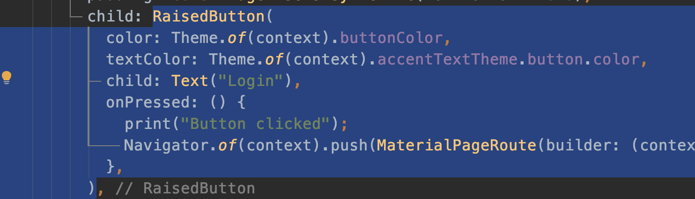
- Go back to the new CustomRaisedButton class and paste it instead the Container widget
- At the top of the class declare the following class members:
final VoidCallback onPressed;
final Widget child; - Create a named constructor for these members:
//custom_raised_button.dart
...
const CustomRaisedButton({Key key, this.onPressed, this.child}) : super(key: key);- Replace the button onPressed and child widget with the class members
//custom_raised_button.dart
...
class CustomRaisedButton extends StatelessWidget {
final VoidCallback onPressed;
final Widget child;
const CustomRaisedButton({Key key, this.onPressed, this.child}) : super(key: key);
@override
Widget build(BuildContext context) {
return RaisedButton(
color: Theme.of(context).buttonColor,
textColor: Theme.of(context).accentTextTheme.button.color,
child: this.child,
onPressed: this.onPressed,
);
}
}Button Decoration
- Under the raised button constructor add a shape attribute as following
shape: RoundedRectangleBorder()
- Set the RoundedRectangleBorder
//custom_raised_button.dart
...
shape: RoundedRectangleBorder(
borderRadius: BorderRadius.all(Radius.circular(10)),
side: BorderSide(color: Theme.of(context).buttonColor)
)Replace Login Button
- Go to the home_page.dart
- Replace the RaisedButton with the new CustomRaisedButton
//custom_raised_button.dart
...
CustomRaisedButton(
child: Text(
"Login",
style: TextStyle(fontSize: 25),
),
onPressed: () => Navigator.of(context).push(MaterialPageRoute(builder: (context) {return GalleryPage();}))
)- Do hot reload
Checkout the new Login button with rounded corners.
Use new button in gallery page
- In
gallery_page.dartfile replace the RaisedButton in the_buildGalleryButtonmethod with the newCustomRaisedButton - Remove the BuildContext parameter from the method and from method callers
//galerry_page.dart
...
Widget _buildGalleryButton(String title, VoidCallback onPressed) {
return Padding(
padding: const EdgeInsets.symmetric(horizontal: 8.0),
child: CustomRaisedButton(
onPressed: onPressed,
child: Text(
title,
style: TextStyle(fontSize: 25),
),
));
}- Do hot reload and navigate to gallery page
- Notice the new gallery buttons

Now let's decorate the gallery image by setting rounded corners and some elevation and shadow.
What you do here
- Customize and decorate gallery page image widget
- Use Container Decoration
- Use the ClipRRect widget
Image Rounded Corners
- In the
gallery_page.dart, click in theImage.networkwidget - Press Options+Enter, and select, wrap with Widget
- Set the
ClipRRectwidget - Add
borderRadiusattribute - Set the border radius:
borderRadius: BorderRadius.all(Radius.circular(10))
ClipRRect(
borderRadius: BorderRadius.all(Radius.circular(10))- Do hot reload
Image Shadow
- Select the
Image.networkparentContainer - Add the
decorationattribute - Set decoration to
BoxDecoration() - In the BoxDecoration set the border radius:
borderRadius: BorderRadius.all(Radius.circular(10)) - Add a
boxShadowattribute:boxShadow: [ ] - Configure the boxShadow as follow:
boxShadow: [
color: Colors.black38,
offset: Offset(4.0, 4.0),
blureRadius: 10.0,
spreadRadius: 0.4)
]
decoration: BoxDecoration(
borderRadius: BorderRadius.all(Radius.circular(10)),
boxShadow: [
BoxShadow(
color: Colors.black38,
offset: Offset(4.0, 4.0),
blurRadius: 10.0,
spreadRadius: 0.4)
]
)- Do hot Reload
- Checkout the gallery page
What you do here
- Add CircularProgressIndicator to our CustomRaisedButton Widget
- Convert HomePage from Stateless widget to a Stateful widget
- Use a Future to simulate long operation
Add a CircularProgressIndicator to the CustomRaisedButton
- In the CustomRaisedButton class add the isLoading boolean member
final bool isLoading; - Update the constructor to set the new parameter
const CustomRaisedButton({Key key, this.onPressed, this.child,this.isLoading = false}) - Set the widget child according to the
isLoadingstate - Set the onPressed field to be null if isLoading is true (disable the button)
child: isLoading ? CircularProgressIndicator() : this.child,
onPressed: this.isLoading ? null : this.onPressed,Change HomePage to a Stateful Widget
In order to use the new button functionality we need to change the HomePage to a Stateful Widget.
- In the
home_page.dartfile, select the HomePage class and press Alt+Enter - From the dropdown options select Convert to Stateful Widget: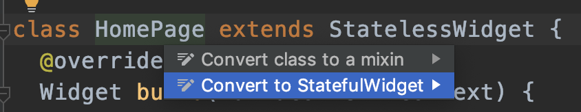
- Notice the generated code
- In the generated
_HomPageStateclass, add a new_isLoadingmember:bool _isLoading = false; - Add the new parameter to the CustomRaisedButton
child: CustomRaisedButton(
isLoading: _isLoading,
child: Text(
"Login",
style: TextStyle(fontSize: 25),
)
...Use a Future to simulate long operation
- At the end of the
_HomPageStateclass add_login()method - In the new method, add
setState()statement to set the_isLoadingtotrue - In the new method, add a
Future.delayed()statement with 5000 milliseconds delay and callback expression - In the Future callback set
_isLoadingto false usingsetStateagain - Move the call for navigator from the
CustomRaisedButton onPressed() =>to the Future callback before setting_isLoading - From the CustomRaisedButton onPressed() call the new _login() method
void _login(){
setState(() {
_isLoading = true;
});
Navigator.of(context).push(MaterialPageRoute(builder: (context) {return GalleryPage();}));
Future.delayed(Duration(milliseconds: 5000), (){
});
}- Do Hot reload
- Click on the login button, notice progress indicator appears before navigation occurs
Codelab Summary
Congratulations!! You've reached the end of this codelab !! Cheers!
Throughout this codelab we've learned the basics of Flutter such as Stateless and Stateful widgets, Column and Rows, decorations, Image download and more.
In addition, we've experienced IDE shortcuts and tips such as widget selection, converting a Stateless widget to Stateful widget, creating custom widgets and using them in code.
Last but not least, we've tasted the cool and easy to learn Dart programming language and its unique syntax which was designed especially for Flutter.
What's Next
Flutter has a lot of topics which hasn't covered in this tutorial and already well known recommended architectures and State Management patterns such as:
- StreamBuilder
- BLoc
- Redux
Flutter also has its own DI techniques which are based on InheritedWidget and the Provider package along with understanding the widget tree structure and how it can help us to manage our app state.
To become a professional Flutter developer, it is extremely important to learn these topics.
Recommended Flutter tutorials:
You may find great tutorials for these topics in the following playlist
Flutter Codelabs:
You may find more great Flutter codelabs in the official Flutter codelab page!
Dart pad :
An online dart playground: You can use it for coding and learning Dart online.
Flutter Studio :
An online Flutter widget editor:
This cool page lets you design and create Flutter widgets and pages, with a cool visual editor. It also generates the Flutter code for you. (Just like Android Studio XML layout editor)